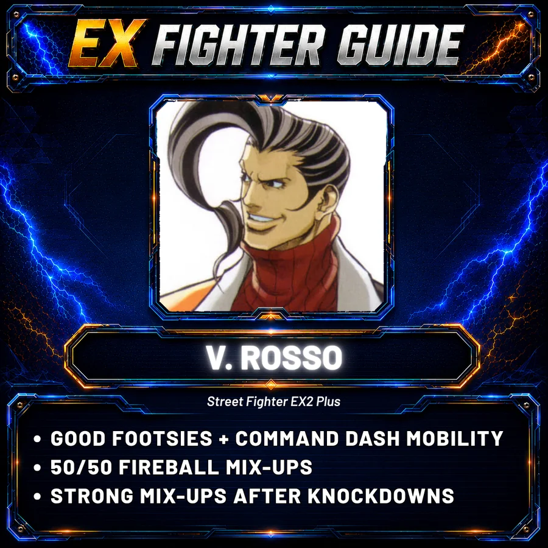
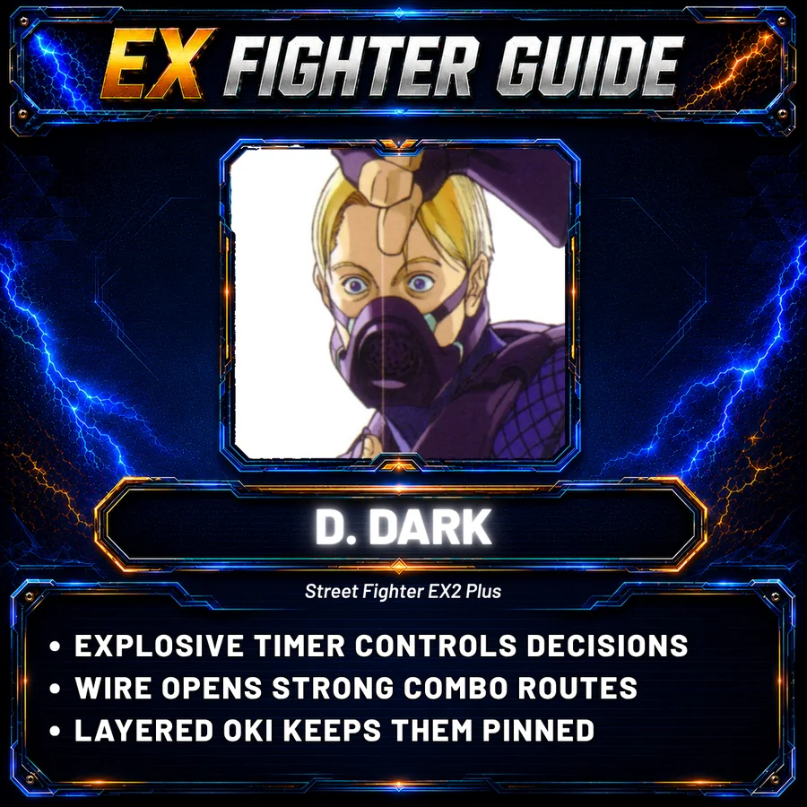

V. Rosso
Footsies, command-dash movement and mix-ups that keep stacking after knockdowns.
VIEW GUIDE →
The competitive heartbeat of modern EX online play. Watch strong sets, discover players and connect matches directly to the characters behind them.
EX2 Plus is being played online today through Arkadyzja. Get the current setup route, official Arkadyzja resources and the SFEXOnline video walkthrough.
HOW TO PLAY EX2 PLUS ONLINE →Meet the EX2 Plus fighters already covered by EX Fighter Guide. See what makes them worth trying, watch a short gameplay example and follow each guide into a featured set.

Footsies, command-dash movement and mix-ups that keep stacking after knockdowns.
VIEW GUIDE →
Explosives, Wire conversions and layered oki that make every knockdown dangerous.
VIEW GUIDE →EX2 Plus sits at the centre of the modern competitive side of the scene. Start with one of our HYPE SET picks, then move through rivalries, community uploads and matches connected to EX Fighter Guide.
 HYPE SET
HYPE SET
A wild Sharon mirror and one of the archive’s HYPE SET selections. Fast, aggressive EX2 Plus that makes a strong first stop for anyone curious about the competitive side of the game.
SFEXOnline uploads and community footage together, with original sources kept visible.
 ▶
▶
A high-level set from the growing SFEXOnline EX2 Plus archive.
WATCH MATCH ↗ ▶
▶
Doctrine Dark vs Shadowgeist in another chapter of a strong online rivalry.
WATCH MATCH ↗ ▶
▶
Another set from the growing SFEXOnline EX2 Plus archive.
WATCH MATCH ↗ ▶COMMUNITY
▶COMMUNITY
Arkadyzja EX2 Plus casuals from the wider online scene.
WATCH ORIGINAL ↗ ▶COMMUNITY
▶COMMUNITY
More footage from one of the recurring EX2 Plus online matchups.
WATCH ORIGINAL ↗